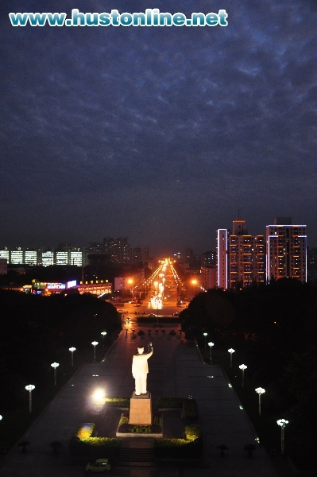
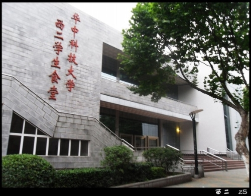
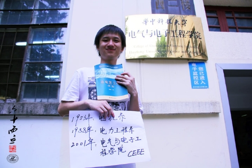
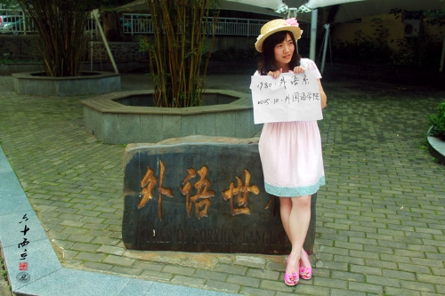

-
华科简介（专访）
主持人：大家好，节目将邀请各大高校招生负责人做客，和广大考生和家长一起聊聊，今年各大院校在招生政策和招生计划方面有没有做出改变和调整。今天关注的高校是华中科技大学，今天做客新浪访谈间的是嘉宾是来自华中科技大学招办主任王作红。
王作红：您好主持人，各位网友大家好，我是华中科技大学招办的王作红。
主持人：欢迎您。对于华中科技大学，我们的了解是它建于1953年，华中科技大学第一感受它可能是工科类比较强，但是这所学校却是综合性的大学，也是我们国家重点建设的211、985高校，请王主任先跟考生们介绍一下这所学校？
华中科技大学被誉为新中国高等教育发展的缩影
王作红：我简要向各位网友介绍一下华中科技大学。在中国有一所大学被誉为新中国高等教育发展的缩影，就是指华中科技大学。华中科技大学是教育部直属的全国重点大学，是首批列入国家“211工程”重点建设的高校和国家“985工程”建设高校。华中科技大学地处美丽的武汉市，总面积7千多亩，环境优雅、景色秀丽，是求学的理想园地。我们学校有森林式大学的美誉，还因为学风优良，我们有“学在华中大”的社会美誉。我们学校坚持建设学生的大学、学者的大学和学术的大学。我们强调建设“一流教学、一流本科”，强调以学生为中心的教育，我们把最优质的教育资源向广大的本科生倾斜。
另外，我校拥有一支以两院院士、博士生导师为中坚的师资队伍，通过实行本科生导师制、课程责任教授制度让这些优秀的学者、教授与广大的本科生尽可能面对面接触，成为学生成长成才的引路人和领航者。
我校有一点跟大家着重介绍，就是拥有一批国内领先的创新平台，比如说我们拥有国家首批批准筹建的五个国家实验室之一—光电国家实验室(筹)；我们还拥有“十一五”期间在高校中仅有的两个拥有国家重大科技基础设施项目之一——国家脉冲强磁场科学中心(筹)；另外我校还是中国政府和欧盟委员会共建的中欧清洁与可再生能源学院中方举办大学，是中美两国政府联合设立的中美清洁能源联合研究中心清洁煤技术联盟中方牵头单位。这些创新平台在我们学校也对广大的本科生开放，通过这些平台的开放，这对我们学生的相关的知识面的增长，以及创新能力和创新意识的培养都会有好处。
主持人：也为以后的深造提供了更多的平台。
王作红：对。
主持人：谈到华中科技大学，看到华中科技大学很多人第一反映是专业性比较强的学校，但是我们学校也是综合性的一所大学，里面有很多的优势学科，谈到综合，很多考生们会犹豫，我们是综合性大学，所以优势学科很多，那么在选择的时候很纠结，您能不能给一些意见和建议？在优势学科和特色专业方面做一些介绍，让考生们更了解一些？
华中科技大学17个一级学科排名全国前十
王作红：华中科技大学是国内水平一流的综合性大学。我给大家介绍一个数据，教育部2012最新一轮的学科评估排名，我们学校的机械工程、光学工程、公共卫生和预防医学，这三个学科全国第一。电气工程全国第二，生物医学工程第三，新闻传播学、公共管理、动力工程及工程热物理这三个学科排名全国第五，还有控制科学与工程、计算机科学与技术、建筑学、城乡规划学、水利工程、船舶与海洋工程、基础医学、临床医学、社会学9个学科排名全国前十。这一轮新的评估中，有17个一级学科排名全国前十，学科优势明显。
主持人：我们有很多的优势学科，刚刚在这里由于时间有限，王主任也不能每一个都列举一遍，刚才我们也谈到了综合性，供大家选择的学科是比较多的，考生们也可以登录华中科技大学招生的网站看一下，他们的优势学科，包括以后的一些学科方面的教学问题，都会列的比较详细，也可以多多关注新浪教育频道。
谈完了优势学科了，聊一下大家比较关注的问题，去年被称之为史上最难就业季，今年的形势也不乐观。谈到就业，要问华中科技大学就业率的问题肯定浪费时间，我们关注的是就业质量和就业层次的问题。我们的考生毕业以后，就业质量如何？
一次性就业率达92%以上
王作红：今年我从媒体看到了一些数据，今年就业的人数是727万，比去年多了28万左右，去年是699万。对华中科技大学来讲，现在我们更多的关注是就业质量，就业率这块对我们学校应该不是问题。
就业率，也跟各位网友汇报一下，一次性就业率是92%以上，出国率是12%，就业率92%里面，真正直接就业的有40%左右，还有40%的学生是录研，其中保送的比例很高。
我要强调的是，我们学校对广大毕业生的就业指导，有专门的本科生的就业指导中心，可以对广大本科生一对一提供就业指导服务，从新生进校就开始对他进行职业规划教育，大学四年或者是五年，全过程会有相关的课程的培训，有求职技巧的培训，以及相关的一对一的指导工作。另外还有基础性的保障，我们每年有2000多场重点的招聘会，就在我们学校召开。广大毕业生可以足不出户就可以在学校享受最好的招聘资源。
另外我们学校与5000多家国内的优质单位建立了长期紧密的联系，这一块对广大的毕业生有高质量的就业是有好处的。当然和其他的学校一样，我们还有大量的实习基地，这一块对推动就业也是有帮助的。
主持人：听到您说从新生入学的时候已经关注到了就业的问题了。
王作红：对。
主持人：我们当时读大学的时候，好多大学是在实习的时候，大四或者是大三最后一学期才可以做就业指导的课程。咱们学校是不是做得太早了？
王作红：这个不早。如果学生进校以后要有动力的话必须要对专业有认可，还要对以后的职业发展要有一定了解和规划。包括现在学生填志愿都已经想到以后的就业了，想到自己以后要做什么了，所以在大一进行职业生涯规划的指导并不早。
主持人：谈到就业，您也是这方面的老师，我一直有一个疑问，问您一个很疑惑的问题。为什么考生毕业以后，大多数都不是从事的自己所学专业的工作？
王作红：这个很正常，在学生毕业之后，可能一部分同学是从事自己的专业工作，可能一部分同学走向其他的职业道路，或者是其他的在大学期间选双学位的，辅修第二学位的可能会跨学科、跨专业，这样的和本专业常规的理解不一样，而且这个比例还不低。
另外跟主持人交流一下，我们还有跨专业考研的，按照常规的理解这又有区别了。比如说本科是学环境工程，但是考研究生可能考经济学、金融学、金融工程。所以说现在我们作为本科的教育更加强调的是通识课程的培养，综合素质的培养。所以现在就是科学精神和人文精神兼备，综合素质要都很优秀，才能适合社会的发展。
主持人：这个现象是不是还可以从反向推出大学的教育其实是非常好的。没有从事我的专业，但是我一样能做得很好，是不是证明综合性的大学能带给他们的教育是通识的教育，会的不是单一的东西，会的很全面。
王作红：所以说在大学里面，学生去学知识、掌握知识一定不能过于单一。从我们的课程设置上讲也不会过于单一。
2014年面向31个省市自治区直辖市招7300人
主持人：对于华中科技大学，很多考生们有很多的问题想要跟王主任探讨，教学、师资等等，大家都可以多多关注华中科技大学的招生网，包括本科的招生网。我想跟您聊一下现在考生们关注的问题，2014年华中科技大学招生政策和招生计划的问题。
今年全国的招生计划有多少人？
王作红：今年在31个省市自治区直辖市招7300人。
主持人：地域方面有没有做调整？
王作红：根据整个国家的宏观的发展战略以及教育部的强调教育公平的原则，我们在分省计划的时候也做了相关的调整，确保计划更合理、公平。
贫困专项计划增加至370人
主持人：每一年对贫困生的关注度比较高，去年贫困专项投放不少，今年是多少人？
王作红：我们学校分两个方面，第一方面是贫困专项计划，去年70人基础之上，今年增加到370人，占整个招生计划5%。第二，拿出总招生计划的2%，来做贫困地区农村学生的自主选拔。这一块华中科技大学加大了宣传力度，报名非常的踊跃，现在进入到了确定名单的最后的收尾阶段。
主持人：学校对他们的招生方式跟其他的学校不一样，也没有面试也没有笔试，到底是怎么样选拔的方式？
王作红：计划产生的时间是4月份，时间比较晚，广大的考生正在复习、备考。学校在研究的时候，第一强调科学性，第二要方便考生。按照教育部的要求，让考生提供材料，通过当地的招生办公室、当地的中学、当地的公安部门，证明他的户口、学籍以及相关的实际就读的真实性，我们审核资料，最后根据高考的成绩来录取。在这个阶段，没有更多去打扰考生们。
主持人：对他们会不会有放宽的政策，比普通的考生分数减少一些？
王作红：明显多了一个机会，只有通过审核的这批考生才有资格填报这个类型，146个计划，就是最后审核这批学生才有资格竞争获得，别人是没有资格填报的。
主持人：咱们在投放的时候，很多考生咨询这样的问题，投放专业的时候，包括贫困专项投放的专业是什么专业，是他们都可以选还是有一定的专业投放？
王作红：按照教育部的要求，我们是拿出部分专业投放，适合于当地社会经济发展的以及考生需求量比较大的专业。但是考生填报的时候也要注意，学校一定要在你这个省有这样的专业计划，你才可以填报。不过这个信息到时候会通过华中科技大学本科招生信息网，会在网上公布的，这一点请广大考生放心。
主持人：这一点也很重要，请考生们多多关注。
关于我们学校，今年又增加了专业，增加了几个专业？
新增两大本科专业
王作红：今年经过教育部批准增加了2个本科专业。第一个是微电子科学与工程，这个专业是在光学与电子信息学院。大家知道光电信息学院，是国家试点学院，全国只有17个，而且这个是整个华中地区唯一的。大家进入这个专业学习可以享有非常好的一种教育资源。招生计划是55人。这是第一个增加的专业。
第二个增加的专业是化学与化工学院的化学专业，这个专业今年招25个人，按照目前的教学计划的安排，准备以实验班的形式进行小班教学，同样给了这25个学生最优质的资源，进校之后每一个学生都会安排一个教授指导。
主持人：像导师制一样？
王作红：对。而且进校之后，而且有机会进到教授的实验室，参与研究。
主持人：这都是精英，招生的分数是什么样的？
王作红：分数还不知道，今年是第一届，鼓励对化学专业有兴趣的同学报考。
主持人：这个方式很新颖。找老师带他们，第一个问题，这个是没有男女生比例的限制？
王作红：没有。
主持人：化学的单科成绩呢？
王作红：也没有。
主持人：这个考生你们的设想是让他们以后留校还是继续深造？是研究型、复合型的人才？
王作红：没有圈定他以后怎么发展，但是我们一定是作为学科基础扎实的创新人才来培养。这一点是肯定的，至于以后可能会就业，可能会去读硕、读博继续深造都有可能。可能会既读相关学科的硕博，也可能被其他的院系保送、考取，都有可能。
主持人：这应该是对于喜欢化学的考生来说是喜讯，让导师带学生只有到了博士才有这样的机会。今年是第一年报考，也希望考生们抓住这样的机会，真是很好的选择。
关于录取规则方面，提档比例是多少？
王作红：学校调阅考生档案的比例在1：1—1:1.2。平行志愿的省份，略大于1：1。
主持人：服从调剂，我也符合身体的要求，可不可以做到进档不退？
王作红：平行志愿省份，考生服从调剂，政审体检合格，我们见档不退。
主持人：有级差分的限制吗？
专业录取不设分数级差
王作红：选专业上面是没有分数级差的。我校实行“分数优先”的原则确定考生的专业。我们建议考生们填报某专业的时候，还是根据兴趣和特长来填报，要适当拉开层次，尽量让专业的填报有层次感，保证你会在所喜欢的专业范围之内，当然最后还建议大家要服从专业调剂。估计很多高校招办老师也都提到这个问题，一旦不服从调剂，招生的时候时间紧、任务重，大学的招办不一定有时间沟通，一旦退档会面临损失很大的问题。
主持人：我们是怎么样对待政策性加分的，是一加到底，还是裸分分专业？
王作红：我们学校对加分政策，对教育部和各个省自治区直辖市所规定的加分、降分录取的政策，我们是认可加分的。但是，我们在分配专业的时候是用实际高考成绩。
主持人：就是把政策性加分砍掉，用高考的实际分分配专业？
王作红：对。
主持人：刚刚谈到调剂的问题，不能回避一个问题，调剂可能不是调到最想报的专业，或者我对这个专业不了解，只看了名称而报考了这个专业，进校以后想转专业，学校有没有转专业的政策，门槛高不高？
王作红：有转专业的政策。在教学资源条件允许的情况下，经教务处组织考核，转入和转出院(系)同意，学生可以在一年级申请跨学科大类转专业，可在二年级申请本学科大类转专业。
主持人：咱们学校的艺术类考生挺多的，并且学校的艺术专业是很牛的，代表艺术考生问您一个问题，我们对于艺术类的招生，单科成绩英语方面有没有要求？
王作红：对单科没有要求，艺术类的专业，包括播音主持、环境设计、产品设计我们在网上都公布了相关的录取规则，没有涉及到单科的要求。
主持人：开场之前特别跟您探讨一个问题，关于报考方面的资讯。北京的考生是考前填报志愿，5月12号开始，现在已经报完了，是2+3的模式，别的省是平行志愿的省，不太一样，在报考填报志愿的时候，应该注意哪方面的内容，我相信有一些高中老师也不一定很清楚，您给提一些建议和意见，应该注意哪些方面？
王作红：建议各位考生和家长，一定要通过各种渠道充分了解平行志愿的规则，应该说平行志愿的规则给考生更大的选择权，保证利益最大化，但是一定要弄懂这个政策才能考虑填报志愿，平行志愿现在在网上可以查到很多文章，无外乎前面5个平行的院校为例，前面1、2个可以冲一冲，中间要稳一稳，最后要有保底的，分数的界限一定要参照高校在省里面的分数线和录取情况。我相信每一个学校在招生录取期间，特别是填报志愿期间都会有招生咨询电话，大家要和这些老师要取得联系，保证自己志愿填报是科学合理的。
主持人：我再代表北京的考生问您一个问题，2+3的模式，家长们对2不太了解，2个平行志愿，其中一个代表什么，可以报同一层次的，还是报不一样？
王作红：北京市实行的平行志愿的方式，前面第一志愿可以填2个院校。我们建议这2个院校要拉开层次，如果完全是两个同层次的学校，你还是浪费机会了，你过了两个学校都可以过，如果不过两个学校都没有机会了。我们建议拉开层次。第一个学校可以冲一冲，第二个要认真仔细研究，最好填把握大一点的学校。
主持人：今天跟王主任聊了特别多，我相信有很多的考生有别的问题要咨询，我们会在文字里面公布招办的电话和网址，大家可以咨询。在节目的最后，请王主任对想要报考华中科技大学的考生，以及2014年即将参加高考的考生们送上您的祝福？
王作红：祝广大考生考入自己理想的大学，当然也欢迎大家关注、报考华中科技大学。
华中科技大学六月份开通的咨询热线：027－87550120，87550122，87550123，87550125，87550126，87550127，87551551，
87551771，87551881，87551991；日常办公电话为027-87542228，87559946，传真电话027－87557014。华中科技大学本科招生信息网：http://zsb.hust.edu.cn。
-
考试周
每学期会有两次集中考试——期中考试周和期末考试周。与中学不同的是，大学的期中考试并非某门课的期中检测，而是这门课结束了，就得进行考试，评定成绩。每学期大家会修多门课程，有的课程先结束，就先考试，后结束则后考试。
期中考试周在每学期的13周，期末考试周则在每学期的最后一个星期。一般在考试周前一两周大家就要进入紧张备考状态，努力复习上自习学习，以求高分通过。大学很多课程都有平时分，大概占总成绩的10%~40%，一般按到课情况和作业完成情况打分。
每个人有自己的学习方法。大学里一般考试不会太难，一般想取得高分的话，平时的刻苦学习自然少不了，另外完成老师布置的作业也很重要，一定不能抄，考试的难度大概与平时作业相当。考试周临近时，学校里很多打印店会有往年试题出售，买一套真题认真做一遍，也可以起到事半功倍的作用。
奖学金
大学里的奖学金或许并没有大家想象的那么难拿，只要好好努力，得各种奖学金的机会还是非常多的。全校各类本科生奖助学金总额达5000万元。获奖总比例超过50%，设有优秀新生奖学金、国家奖学金、国家励志奖学金、国家助学金、人民奖学金及国内外团体与个人捐资设立的40余项社会奖学金。
一、优秀新生奖学金
这个是按照大家的高考成绩评的，参加全国统一高考，第一志愿报考我校的优秀新生，高考总分（不含附加分）列各省、自治区、直辖市前10名的学生获一等奖（15000元/人）；前50名的学生获二等奖（8000元/人）；前100名的学生获三等奖（5000元/人）。
二、国家奖学金（8000元）
国家奖学金每年评一次，奖金达8000元，是所有奖学金中的最高标准，也是最难拿的。评国奖的一个重要标准是加权成绩，要求上学年在本专业成绩排名达前20%，这是最基本前提。国奖的名额很少，一般一个班至多一个名额。
三、国家励志奖学金（5000元）
国家励志奖学金主要针对的是家庭经济困难的学生，也是每年评一次，奖金为5000元。国励对于加权成绩的要求相对国奖要低些，只要达到上学年本专业成绩的前40%。一个班一般有1~2个名额。
四、人民奖学金
人民奖学金是名额最多的，也是最好拿的，当然金额也要少很多，一般为800元或400元。包含学习优秀奖学金（按加权排名）、学习进步奖学金、自强奖学金、文体活动优秀奖学金、优秀学生干部奖学金等多项，获奖者要求加权成绩在前40%。
五、国家助学金
国家助学金的评定对加权成绩没有特殊要求（但也不能挂科吧），主要是针对家庭经济困难学生，具体标准分3等，一等3000元（每班1人），二等2000元（每班5人），三等1000元（每班5人）。新生入校后即有一次评选，以后每年评选一次。
大一下学期开学后有一次奖学金评比，因院系而异。主要评选人民奖学金，奖金额度为一年奖学金的一半。
保研·考研
对于想要保研的同学而言，加权就是王道。除了平时成绩不能掉下尽力保优之外，也要积极寻求其他的加分政策。如全国大学英语六级考试通过者、全国大学英语口语考试获得A等级者奖励0.5分；学生在校期间，获发明专利者奖励2分；获实用新型专利者奖励1分；对于获全国三好学生、优秀学生干部、优秀共青团员称号者奖励2分，省级三好学生、青年五四奖章称号者奖励1.5分等等，近年也减少了一些政治方面的加分，相对而言对学习要求的公平性大大增加。其他具体细则详见学校相关文件或咨询班主任和辅导员。
考研是比高三更艰难的一件事。高三有一群有共同目标的同伴，和一群全力以赴的老师给予帮助。然而考研很可能是孤军奋战，身边的同学或找工作，或有其他出路，静心就成了一件很难的事。而且不会有专门的辅导老师。你可能需要额外报一堆考研辅导班，是金钱和精力以及意志力的极大考验。所以，有些同学会把考研当作高考的补偿或是一种跟风的非主动行为。做这个决定之前，最好先衡量各方面因素再做出慎重的决定。
图书馆
主校区图书馆目前分为新馆和老馆，其中新馆主要是各种阅览室（可以看书或自习，但不能借书），借书要去老馆。东校区图书馆的图书馆藏量相对要少很多，很多图书还是得去主校区借。军训期间，图书馆会组织新生进行一次培训，专门介绍图书馆资源的使用等。
主图和东图都有门禁制，需要凭图书证或学生证才能进入。普通本科生一次借书量至多为10本，结束周期为1个月，至多可续借一次。如果超过借书期限未还，就要被罚款了，超过一天大概要罚款0.5元。
校图书馆主页：http://www.lib.hust.edu.cn
另外小编要跟大家推荐的还有图书馆数据库，从图书馆主页点击进去，有外文数据库、中文数据库等，可以查到很多珍贵学术资料。对于低年级同学，还有新东方多媒体数据库（http://t.cn/h1RXlI），里面有新东方的很多课程，用学校IP可免注册登陆免费学习。
转专业
在学校教学资源许可的情况下，我校学生有两次转专业的机会。
第一次转专业的机会为进校后的第一个学期末，凡因身体原因或兴趣爱好要求转换专业的新生可以提出申请，转入到除信息大类和临床医学以外的专业，经考核，转入院系同意，学校有关部门审查即可。有专门的转专业考试，以英语、数学为主，转专业以考试成绩为主，另外考虑高中竞赛获奖情况，成功率在30%左右。这次转专业可以跨系转。
第二次转专业的机会在大二下学期中期，学生可在自己所属的学科大类中自行选择专业。这次转专业是在大类里转，例如机械大类内的几个专业（如机械、材控、能源等）可互转，但机械就不能转新闻等了。具体请详见当年教务处颁发的转专业相关文件。学校为了适应学分制的要求，把所有专业大体上划了几个类，一个是信息学科大类，第二是机械学科大类，第三是土木建筑环境工程大类，第四个是电气学科大类，第五是文科大类，第六是医科大类，第二次转专业要在大类内转，这个大类一般是涵盖了十几个专业。
双学位
双学位一般是在大二下学期才能修，武汉的七所211高校（武大、华中大、地大、武汉理工、华师、财大、华农）各有部分专业可供这七所高校的学生选择。有很多新人对双学位很感兴趣，想着大学里学一门工科（或理科）再兼修经济（或管理），那岂不很爽？想法是很好，但实际学起来就不那么简单了。其实，过了大一你就深有体会，很多专业课程排的很满，很多同学把自己本专业学好都有些吃力。如果不是真的学有余力并且很感兴趣，建议大家不要报。
当然双学位申报是有条件的，比如成绩之类的，还需要交一定的费用（一般是5000元左右）。具体规定及专业设置可参考往年情况：http://sse.hust.edu.cn/news/bksjy/20101130/1195.html
-
学术大师
中国科学院院士
杨叔子 朱中梁 程时杰 罗 俊 熊有伦 沈其震 吴孟超 吴 旻 郑晓静 叶朝辉 梁伯强
童第周 贝时璋 沈韫芬 裘法祖 姚建铨 沈绪榜 孙汉董 葛昌纯 刘以训 杨 简
中国工程院院士
周 济 樊明武 潘 垣 张勇传 李培根 叶声华 岑可法 姚绍福 郭孔辉 谭建荣 陆道培
侯云德 周宏灏 段正澄 杨宝峰 罗锡文 崔 崑 张涤生 赵梓森 吴中如 方秦汉 王正国
刘广润 朱建士
高校主帅
査 谦：物理学家、教育家，华中工学院第一任校长
朱九思：杰出教育家，华中工学院第二任校长
陈小筑：西北工业大学党委书记
王 乘：河海大学校长
郑晓静：西安电子科技大学校长，原兰州大学副校长
杨宗凯：华中师范大学校长
邹寿斌：电子科技大学原校长
刘 伟：武汉理工大学党委书记
张清杰：武汉理工大学校长
周祖德：武汉理工大学原校长
张安福：武汉理工大学副校长
杨志光：中南财经政法大学党委副书记
胡社军：华南师范大学党委书记
郭立峰：中国人民解放军海军工程大学校长，少将
蓝江桥：中国人民解放军空军预警学院院长，少将
冯友梅：武汉大学常务副校长
黄从新：武汉大学副校长
蒋昌忠：武汉大学副校长
陈建新：华南理工大学党委副书记
曹一家：湖南大学副校长
刘建凡：湖北大学党委书记
熊健民：湖北大学校长
顾豪爽：湖北大学副校长
王世敏：湖北大学副校长
杨宝峰：哈尔滨医科大学校长
陈小龙：同济大学常务副校长
胡敏强：东南大学常务副校长
喻世友：中山大学纪委书记
许晓鸣：上海理工大学校长，上海交通大学原副校长
周哲玮：上海大学原常务副校长、党委副书记，中国力学学会第九届理事会副理事长
杨世忠：首都经济贸易大学纪委书记
陈 新：广东工业大学校长
冉丕鑫：广州医学院院长
刘 塨：华侨大学副校长
罗锡文：华南农业大学原副校长
王 乔：江西财经大学校长
邓晓华：南昌大学副校长
肖华茵：江西财经大学副校长
高海生：华东交通大学副校长
何伟军：三峡大学党委副书记
徐建培：青岛大学党委书记
马连湘：青岛科技大学校长
王智平：兰州理工大学党委书记
郝书辰：山东财经大学（筹）党委书记
张德姜：长春工业大学校长
陈运超：重庆工商大学副校长
陈 宁：西华师范大学校长
吴小南：福建医科大学副校长
政治精英
中央部委：
周 济：十七届中央委员，中国工程院院长，原教育部部长
刘石泉：十六、十七届中央候补委员，中国航天科工集团第四研究院院长，被誉为“中国巡航导弹之父”
谢伏瞻：国务院研究室主任、十七届中纪委委员、中国科学院学部咨询委员会顾问
张鸣起：全国总工会副主席、书记处书记、党组副书记，中央社会治安综合治理委员会委员
陈小娅：科技部副部长、党组成员、直属机关党委书记
郜风涛：国有大中型企业监事会主席，国务院法制办原副主任、党组成员，机关党委书记
丹笑山：国有大中型企业监事会主席
邓波清：中国驻尼日利亚特命全权大使
刘 凡：十届民革中央副主席、十一届全国政协常委、全国政协港澳台侨委员会副主任
李传卿：十一届全国人大常委、全国人大环境与资源保护委员会副主任、十六届中纪委委员
钱信忠：卫生部原部长、党组书记
何界生：中国银监会党委委员，中国金融工会主席，卫生部原副部长
殷大奎：卫生部健康教育首席专家、中国医师协会会长、中国健康教育协会会长，卫生部原副部长
张德楠：国务院三峡办原副主任
张军扩：国务院发展中心党组成员、办公厅主任
王延觉：教育部科学技术司司长
湖北省：
张昌尔：湖北省委副书记、政法委书记、总工会主席
罗 辉：湖北省人大常委会副主任
段轮一：湖北省人民政府资政，湖北省原副省长、党组成员
范锐平：湖北省委常委、襄阳市委书记、市人大常委会主任
梁伟年：湖北省委组织部常务副部长
唐良智：湖北省武汉市委副书记、市长
孙 亚：湖北省国土资源厅党组书记、副厅长
贾耀斌：湖北省武汉市市委常委、市政府常务副市长
刘英姿：湖北省武汉市副市长
罗长刚：湖北省武汉市人大常委会副主任
王建鸣：湖北省黄石市委书记、市人大常委会主任
李新华：湖北省纪委委员、荆州市委书记
朱汉桥：湖北省潜江市委书记
李乐成：湖北省宜昌市委副书记，市长、党组书记
刘雪荣：湖北省黄冈市委副书记、市长
周 霁：湖北省十堰市委副书记，市长
任振鹤：湖北省咸宁市委副书记，市长、党组书记
湖南省：
王克英：湖南省原常务副省长、省人大常委会原副主任、省政协原主席
罗海藩：湖南省人大常委会原副主任、党组副书记
高锦平：湖南省人大常委会原副主任
肖文伟：湖南省高速公路管理局党委书记
魏旋君：湖南省永州市委副书记、市长
河南省：
赵素萍：河南省委常委、宣传部长
王 铁：河南省副省长
张广智：河南省副省长
祁金立：河南省开封市委书记
李 亚：河南省许昌市委书记
何 雄：河南省济源市委书记
江西省：
梁凯轩：江西省原副省长
陈俊卿：江西省南昌市委副书记、市长
李安泽：江西省新余市委书记
陈卫民：江西省萍乡市委副书记、市长
广东省：
唐国忠：广东省政协副主席、党组副书记
海南省：
王琼英：海南省副省长，台盟海南省主委、六、七届台盟中央常委
江苏省：
弘 强：江苏省省委常委、省纪委书记
辽宁省：
黄 凯：辽宁省沈阳市副市长
陕西省：
娄勤俭：陕西省副省长，工业与信息化部原副部长
杨广信：陕西省西安市党组成员、原副市长
甘肃省：
郝 远：甘肃省副省长、省工商联主席
贵州省：
宋璇涛：贵州省委常委、省纪委书记
王富玉：贵州省委副书记、省政协副主席
内蒙古自治区：
王学丰：内蒙古自治区乌兰察布市委书记
侯凤岐：内蒙古自治区乌海市委副书记、市长
广西省：
金湘军：广西省玉林市委书记
著名学者
张培刚：著名经济学家，发展经济学创始人
林少宫：著名经济学家，数理统计学家和计量经济学家，我国计量经济学奠基者之一
张军扩：杰出经济学家，国务院发展中心党组成员、办公厅主任
张燕生：杰出经济学家，国家发展和改革委员会对外经济研究所所长
陈小洪：杰出经济学家，国务院发展研究中心企业研究所所长
巴曙松：杰出经济学家，国务院发展研究中心金融研究所副所长
李佐军：杰出经济学家，国务院发展研究中心资源与环境政策研究所副所长
向松祚：杰出经济学家，中国农业银行首席经济学家，中国人民大学国际货币研究所副所长，国际货币金融机构官方论坛（OMFIF）顾问、研究委员会成员
徐滇庆：杰出经济学家，加拿大西安大略大学休伦学院教授，长城金融研究所所长，被誉为“中国民营银行之父”
宋 敏：杰出经济学家，香港大学金融系教授，香港大学中国金融研究中心主任
方振民：杰出经济学家，香港城市大学教授，师从诺贝尔经济学奖得主亨利·马柯维奇
艾春荣：杰出经济学家，佛罗里达大学经济系教授
石寿永：杰出经济学家，多伦多大学经济系教授，全球经济学家排名第42位，华人经济学家中位居第一
田国强：杰出经济学家，德州农工大学经济系教授，上海财经大学经济学院院长
谭国富：杰出经济学家，南加州大学经济系教授，上海财经大学国际工商管理学院院长
叶荫宇：斯坦福大学管理科学与工程系、电机工程系双聘教授，获冯·诺依曼理论奖
沈 康：斯坦福大学神经回路与突触实验室首席科学家
陈 刚：麻省理工学院机械工程系教授，美国国家工程院院士
任志峰：波士顿学院纳米实验室教授、首席科学家，超导和纳米领域国际知名科学家
李少凡：加州大学伯克利分校土木与环境工程系教授
张 忠：宾夕法尼亚大学沃顿商学院冠名讲席教授
刘建华：威斯康星大学教授
汪 宁：伊利诺伊大学香槟分校教授
冯 蔚：北卡罗莱纳惠明顿分校数学系主任
高光荣：特拉华大学教授，大陆学者在麻省理工学院获得计算机科学博士学位第一人
孙剑桥：加州大学美熹德分校教授，ASME Fellow
朱建刚：卡内基梅隆大学电机与计算机工程系教授，IEEE Fellow
贺 熹：哈佛大学医学院神经学系教授
胡丙长：哈佛大学公共卫生学院教授，“千人计划”国家特聘专家
汪立宏：华盛顿圣路易斯大学教授，国际生物医学光学协会主席，IEEE Fellow
仲冬平：俄亥俄州州立大学物理系教授，美国物理学会会士（APS Fellow）
黄 伟：俄亥俄大学商学院管理信息系统系教授
唐军建：著名建筑设计公司HDR政府工程总建筑设计师，美国首位获得“奥本勋章”的华裔建筑工程师
吴青华：利物浦大学工学院院长，电气与电子工程系教授，IEEE Fellow
杨 庆：国际著名计算机学家，罗德岛大学教授，IEEE Fellow
张军山：美国亚利桑那州立大学电子计算机与能源学院教授，IEEE Fellow
Kai H. Luo：伦敦大学玛丽女王学院计算流体、燃烧工程系系主任，ASME Fellow
Pei Zhong：杜克大学机械工程与材料科学系教授，ASME Fellow
刘 胜：长江学者特聘教授，华中科技大学微系统研究中心主任，ASME Fellow
徐 涛：中国科学院生物物理所所长
袁家虎：中国科学院成都分院党组书记
吴伟仁：中国探月工程总设计师，国际宇航科学院通讯院士
于登云：中国航天科技集团公司科技委副主任、中国探月工程副总设计师
郭剑波：中国电力科学研究院院长、党组副书记
吴晓光：中国船舶重工集团公司第七O一研究所所长、研究员，国家航母工程副总设计师
孔 力：中国科学院计划财务局局长
鲁红兵：俄克拉荷马州立大学机械与航空航天工程学院教授，美国航空航天学会通讯会士
李 东：德州农工大学经济学博士，堪萨斯州立大学经济系副教授
蔡 巍：少年班毕业，斯坦福大学机械系副教授，2007年美国青年科学家总统奖大陆旅美学者唯一获奖者
刘 钢：加州大学伯克利分校生物工程博士，2010年美国青年科学家总统奖获得者
干 毅：国民革命军陆军少将，机械系知名教授，周恩来总理称赞其“文武全材”
阎 圣：中将，陆军第三十八集团军军长
张道炽：中将，桂林空军学院副院长
郭立峰：少将，海军工程大学校长
王正明：少将，国防科技大学教育长
钟辉煌：少将，国防科技大学副教育长
龙兴武：少将，国防科技大学光电科学与工程学院光电工程系主任，教授
姚 颖：少将，空军工程大学副政委
蓝江桥：少将，空军预警学院院长
邓焕章：少将，总参谋部机要局副局长
王维山：少将，广州军区空军副司令员
聂 皋：少将，洛阳电子装备试验中心司令员
王小京：少将，北京军区装备部部长
王厚生：少将，解放军通信指挥学院教授
钱信忠：少将，中国共产党中央顾问委员会委员，卫生部原部长、党组书记
吴孟超：少将，中国科学院院士，第二军医大学东方肝胆外科医院院长
颜达材：少将，中国人民武装部队学院原副院长
工商巨子
李 军：中国银行党委副书记、监事长，原交通银行行长
李国安：中国船舶重工集团公司党组成员、副总经理
王野平：电监会副主席，原南方电网总经理
李定凡：中国核工业总公司原总经理
刘顺达：中国大唐集团公司董事长、党组书记，大唐国际发电公司董事长
贺 禹：中国广东核电集团有限公司党组书记、董事长
刘 健：中国海洋石油有限公司副总经理
马国强：上海宝山钢铁股份有限公司总经理
周展麟：中国广东核电集团有限公司原总经理
王振有：武汉钢铁（集团）公司党委书记、副总经理
张 诚：长江三峡集团党组成员、长江电力公司总经理
聂 凯：中国葛洲坝集团党委副书记、副总经理
马须伦：东方航空公司股份有限公司总经理，东方航空集团党组副书记
陈宗年：中国电子科技集团公司第52研究所所长，杭州海康威视数字技术股份有限公司董事长
贺建华：东方电机总经理、总工程师
裴振江：西电集团副总经理
寇 伟：中国华能集团公司副总经理、党组成员、总工程师，华能澜沧江水电有限公司董事长
王中兴：国家电网公司总经理助理
单业才：江苏省电力公司总经理、党组副书记
秦红三：江西省电力公司总经理、党组副书记
董志毅：首都机场集团总经理、首都机场股份公司董事长（香港上市）
孙建平：中国平安财产保险股份有限公司董事长兼CEO
李维谦：天水星火机床有限公司董事长，2010中国机电工业年度人物
徐和谊：北京现代汽车有限公司董事长，2010年CCTV中国经济年度人物
易小刚：三一重工股份有限公司总工程师
李志刚：长城信息产业股份有限公司总裁
汪潮涌：信中利投资集团公司董事长与CEO
喻子达：海尔集团执行副总裁
张铁燕：海尔集团全球运营总监
郑宝用：华为公司副董事长，常务副总，华为美国公司董事长，任正非的创业搭档，原华为工号（0002）
孟晚舟：华为常务董事、首席财务官（CFO）
陈珠芳：华为公司副总，党委书记
洪天峰：华为常务副总裁，首席运营官（COO）
周 劲：华为副总裁
郭 平：华为副总裁
李晓涛：华为高级副总裁
胡厚昆：华为副董事长
李一男：金沙江创投合伙人，曾任华为副总裁、首席电信科学家，港湾网络创始人、CEO，百度CTO等
庞胜清：中兴通讯股份有限公司副总裁
张小龙：Foxmail创始人、腾讯公司副总裁
黄晓庆：UT斯达康原高级副总裁，现为中国移动研究院院长，“千人计划”国家特聘专家
卢 鹰：UT斯达康首席执行官
施 倩：北大方正集团公司副总裁
花 欣：迈普产业集团有限公司董事长
梁毅强：西门子（中国）有限公司副总裁
丁宏祥：中国进口汽车贸易中心总经理
汪大总：北汽控股总经理，全球汽车精英组织主席
易继辉：伟创力公司全球副总裁
姚 欣：上海聚力传媒技术有限公司创始人兼首席执行官，PPLIVE创始人
汪海兵：上海淘米网络科技有限公司CEO，创始人
宋海波：动网先锋网络科技有限公司创始人
孙建平：中国平安财产保险股份有限公司董事长兼CEO
陈邦栋：上海思源电气股份有限公司创始人，历任董事长、总经理
龚虹嘉：创办德生公司、海康威视、握奇数据等公司，2010年福布斯中国富豪榜第59位，个人资产100亿
黄 立：武汉高德红外股份有限公司创始人、董事长，2010年福布斯中国富豪榜第144位，个人资产60亿
叶 滨：拥有上市公司世纪鼎利，个人资产20亿
张 斌：北京物美集团总裁（香港上市）
郎 华：特雷克斯中国区总裁
袁仲荣：广州丰田汽车有限公司董事长
王 喆：星光国际集团董事长
吴立春：山东三庆集团董事长
熊续强：银亿集团创始人
陈淑宁：文思创新公司董事长兼CEO（纽交所上市），有“中国软件外包第一人”的美誉
芮冬阳：智光电气总经理
阳树毅：上汽依维柯红岩商用车有限公司总经理，上海内燃机研究所原所长
陈斌波：东风本田中方总经理，东本执行副总经理
凌 克：金地集团董事长
童国华：烽火通信董事长
陈吉红：华中数控董事长
张新访：天喻信息董事长
唐 浩：中建三局第三建设工程有限责任公司董事长、总经理
刘勤强：武汉健民药业总裁、武汉健民药业集团股份有限公司董事
赵志伟：金融界CEO（纽交所上市）
宋志平：中国建筑材料集团公司董事长，国药集团董事长
刘 智：深圳世纪人通讯设备有限公司董事长（新加坡上市）
袁 丹：世纪人通讯设备有限公司总经理（新加坡上市）
吴 松：广州汽车集团乘用车有限公司总经理
韩广德：广船国际股份有限公司总经理
靳海涛：深圳市创新投资集团董事长
张向宁：天下互联网科技集团董事长兼CEO
谢永金：江钻股份副董事长
陈贤义：人民卫生出版集团有限公司董事长兼党委书记
同济英才
梁伯强：著名医学教育家、病理学家，中国科学院院士，我国病理学奠基人之一
金问淇：医预科，国家一级教授，著名妇产科专家
贝时璋：实验生物学家、细胞生物学家、教育家。我国细胞学、胚胎学的创始人之一，生物物理学奠基人，中央研究院院士、中国科学院院士
李赋京：国家一级教授，著名病理学家
谷镜汧：国家一级教授，著名病理学家
沈其震：著名医学生理学家，中国科学院院士
吕富华：著名药理学家，医学教育家
陶桓乐：国家一级教授，著名呼吸内科专家
谢敏晋：著名微生物学家，生物制品学家
裘法祖：医预科，中国科学院院士
武忠弼：著名病理学家，被誉为”同济活化石”，德国自然科学院院士
邵丙扬：著名内科学家，首创治疗日本血吸虫病的“酒石酸梯钾三日疗法”
过晋源：著名内科学家
钱信忠：肄业，卫生部原部长、党组书记，中国共产党中央顾问委员会委员，少将
吴孟超：中国科学院院士，少将
吴 旻：中国科学院院士
张应天：首届中国医师奖获得者
陆道培：中国工程院院士
侯云德：中国工程院院士
桂希恩：著名传染病专家，贝利·马丁奖章获得者
韦加宁：知名医生，白求恩奖章获得者
周宏灏：中国工程院院士
殷大奎：卫生部健康教育首席专家、中国医师协会会长，卫生部原副部长
戴宗晴：全国劳模，白求恩奖章获得者
何界生：中国银监会党委委员，中国金融工会主席，卫生部原副部长
执教同济
王宝韫：国家一级教授，著名内科学家
梁之彦：国家一级教授，著名生理化学家
童第周：教育家，中央研究院院士、中国科学院院士，中国科学院副院长、第五届全国政协副主席。中国实验胚胎学奠基者之一
荣独山：国家一级教授，著名医学家、医学教育家、中国放射学奠基人之一
姚永政：创建同济寄生虫学馆，国家一级教授，著名寄生虫病专家，“姚氏钉螺”发现者
杨述祖：创建同济病理学馆，国家一级教授，著名病理学家
李宝实：国家一级教授，著名耳鼻喉专家
于光元：国家一级教授
张涤生：国家一级教授，著名整形外科专家
屠开元：国家一级教授，著名的医学教育家，骨科学和创伤外科学奠基人之一
蔡宏道：著名临床检验学家、环境卫生学家、医学教育学家
文体英才
李 娜：2011年法网女单冠军，亚洲第一个大满贯单打冠军，世界排名第4位
李 婷：2004年雅典奥运会网球女双冠军
李行亮：天娱传媒签约歌手，2010年湖南卫视快乐男声全国6强
王 喆：星光国际传媒集团董事长，华中大非正式版校歌《记忆中》、神七主题曲《飞》等的演唱者
-
历史风云人物
查谦：华中工学院的首任院长
1953年，他来到关山，面前是一片荒山。1975年，他离开世间，身后是一个名校。
查谦，华中工学院首任院长，将22年的精力全部倾注给了华工。他选址关山，为华工选择了一片依山傍水花园般的土地；他带领师生发起“圈地运动”，为华工围起了数千亩的校园；他将“实验室作风”吹遍全校，为学校赢得了“学在华工”的美誉……
“关山，将会变成一块宝地”，华工人总是自豪的说这句话。1952年，在主持华中工学院选址时，查谦教授力排众议、定址关山。从此，一个依喻家山、临东湖水、湖光山色交相辉映的“森林大学”成长起来。
“他为华工留了一片地。”筚路蓝缕，以启山林。在当年经费奇缺的条件下,他发起“圈地运动”，带领师生围起了华工校园四个方向的角落，给华工留下了充足的发展空间。
“他给华工带来了严谨的校风。” 他担纲华工期间，谨慎踏实的“实验室作风”吹遍全校，为华工严谨校风的形成奠定了良好的基础，也为学校赢得了“学在华工”的良好声誉。
他离去32年后，关山山水依旧。他亲手垒起的喻园，树木依然葱郁。只是，更多的人开始将她视为自己的精神家园，喻园的天空变得更加广阔、蔚蓝。
张培刚：发展经济学之父
“发展经济学的创始人是中国人，是张培刚先生。他是中国的骄傲。”
张培刚老教授去年离开了我们，他一生的经历总让后辈觉得太坎坷。
20世纪四十年代，时在哈佛读书的张培刚凭借其博士论文《农业与工业化》获得哈佛学术最高荣誉“威尔士”奖，并由此成为世界发展经济学奠基人，当年他32岁。作为中国人，在世界经济学领域能够自成体系，他是唯一的一个。
1949年，张培刚放弃了联合国高级官员的职务，毅然回国供职，但回国后却坎坷不断。在“文革”中，张培刚先生的的理论没有得到认同，他被下放劳改。与此同时，曾与他同样获得过威尔士奖的萨缪尔森，获得了诺贝尔经济学奖；随后他曾经的同事刘易斯又以 “发展经济”理论获得了诺贝尔经济学奖，而这个观点张教授于20年前的论文中就提出来了。
“文革”结束后，张培刚在华中工学院开设经济学专业，并担任经济学院院长、经济发展研究中心主任。这时，他把藏了整整30年的《农业与工业化》中译稿整理出版。这本奠定了世界发展经济学基础的书在被埋没了半个多世纪之后，终于在国内开始引起人们的注意。这时的张老已经近70岁了。
2007年6月9日，在“庆祝张培刚教授95华诞学术研讨会”上，精神依然矍铄的张培刚老人寄望后学，“我殷切地盼望，在繁星点点的夜空中，出现闪烁炫目亮光的中国新星。”
朱九思：乱世中庇佑华工的勇者
朱九思老院长在上世纪53年到84年一直在华中工学院工作。他担纲华工的时候恰好是共和国几经动荡、高等教育如履薄冰的困难年代。然而当年的华中工学院却在各高校大幅倒退的背景下逆流勇进，引入了一大批优秀知识分子，也为学校日后的飞速发展奠下了十分坚实的基础。
老院长素以尊重人才，礼贤下士远近闻名。文革期间，他专设人事处，到处寻找被批斗下放的人才。十年间，华工一共收留了全国被扫地出门的专家教授六百余名，在乱世中为学校赢得了宝贵的资源。这不但为文革后华工的大发展奠定了人才基础，更为民族发展、国家建设保护了优秀的专业人才。文革结束时，教育部进行的全国高校评估中，华中工学院在十五项指标中夺得十二项全国第一，一时间名声大起。这些都得益于老院长的高瞻远瞩。
华工由纯工科性学校向综合性大学迈进也发轫于九思老院长。他把华中工学院的英文译名定为“HUST”，奠定了今天建设综合性大学的基础。他于上世纪80年代初就提出开展工科院校的人文教育和走高校的综合化道路，并率先在工科院校中建立文科专业，使得华工在人文教育方面走在所有工科院校的最前面。
今天华中大“森林大学”的美誉也得感谢老院长。据说朱老院长看到学校里哪里的树木植物被人损坏，马上就给学校绿化委员会打电话投诉，华工每砍一棵树都要校长亲自签字的传统从他当校长时就订下了，如今的华中大爱树如命。
裘法祖：仁者仁医
1946年10月，一艘德国赴上海的海轮，一位留洋归来的中国医生在甲板上成功为一名肝脏破损的濒危病人实施了肝脏缝补手术，病人转危为安。当时的中国人只能做阑尾切除等小手术，因此船未抵岸，这位中国医生高超的医术已经被各大报纸所报道。
后来，这位医生成为了中国腹部外科和普通外科的开拓者，中国器官移植的先行者，他就是我国医学界公认的一把宝刀、华中科技大学同济医学院名誉院长裘法祖教授。60年来，他的裘氏刀法点燃了一个个患者的生命之灯。2001年他获得了中国医学基金会“医德风范终身奖”。他和夫人罗懿（德国人）相濡以沫六十余年的异国情缘也印证了幸福人生的真正涵义。
自古以来，“行医”与“济世”往往被相提并论，良相者医国，良医者医民。中科院院士裘法祖教授无愧于良医之称。他丰富的人生经历、丰硕的学术成就、崇高的情感世界，质朴清新的作派，令人如沐春风。
作为医生，他在手术操作风格上形成了一套独具特色的“裘氏风范”。坚定主张能不开刀就不开刀，能用小开刀解决的就小开刀，如果必须要开大刀，一定要开得彻底、开得好。在中国，最早迈出器官移植第一步的就是裘法祖，直到现在，裘老主持的肝移植仍保持着两项全国记录：例数最多，存活时间最长。
作为医学教育家，裘法祖教授数十年如一日。强调实践，对青年医生培养“大胆放手，具体指导，严格要求”，强调外科医师要做到“会做、会写、会讲”。几十年间用他大视野、大智慧、大胸襟的“裘氏风范”影响了几代人。他曾说过，最大的希望就是弟子超过自己。几十年来，他培养了一大批杰出的医学人才，我校校友、中国最高科技奖获得者吴孟超院士就是其中的代表。
曾有记者问他对幸福人生的定义，裘老认真的回答：做人要知足，但做事要知不足，做学问要不知足。
杨叔子: 塑造华工人文力量的巨擎
一位成就卓著的机械工程学家，一个有着深厚文学修养的诗人，一位掀起高校“人文风暴”的儒雅校长……许多年过去了，杨叔子教授，依旧是那个活跃在年轻人当中的杨叔子。
几年前，时任北大副校长的王义遒疾呼“人文精神教育”，他撰文说，“真正科学大师除了掌握本门学科外，一定要有较高的文化修养”，“经济学家要像厉以宁教授那样，工程技术专家要像杨叔子院士那样”。
杨叔子教授，这位“中华诗词学会名誉会长”的湖北首位中科院院士，当无愧于这样的赞赏。在很多人的印象里，清瘦的杨叔子院士，却有一股特别的吸引力，“表达时诗歌辞赋、哲学词库，信手拈来，让人暗暗称奇”。
他的演讲总是激情四溢，充满诗性，让你忘记他是年过七旬的科学家，一个在机械科学领域钻研了一辈子的老教授。
1993年，杨叔子出任华中理工大学校长。在任4年间，他掀起了“人文风暴”。将大学语文与学位证挂钩，规定理工科学生必须修满六个人文学科学分，并开展了饮誉全国的“人文讲座”。现在，华中大的人文讲座已经举办了近1300期，吸引了校内外30多万人次的听众，成为喻园一道亮丽的风景线。
如今，这位诗酬岁月的七旬老人，已经成为喻园的一种精神表征。
涂又光：鹤发童颜的哲学大家
所谓大学者,非谓有大楼之谓也，有大师之谓也。名校一个神奇的地方，就是也许某天下午和你擦肩而过的平凡老人，正是学界无出其右的泰山北斗。涂又光老先生正是一个能给你这样感动的人。涂老喜欢在树影班驳的校园中闲逛，于是许多同学都有这样的经历：一个人在路上时，目光不由被一个老人吸引，他满头银发、步伐矫健、布衣粗履却精神矍铄，一种浑然天成的气质。了解后方知， 老人正是华工的镇校之宝，冯有兰先生的高足——涂又光教授!
涂老的课堂是永远最让学生期待的：言辞犀利流畅，情绪悲愤睿智，古今典故信手拈来让人心生敬佩。涂老长于翻译，讲课总爱中英结合，板书苍遒有力，说话时腰杆笔挺一身正气岸然，一位矍铄老者的力量就这样一点点渗透开来。
这位充满传奇色彩的华科名人，有时也会有点小脾气，他直言不讳地厌恶两个外来风俗——送花和生日蛋糕，生气时会在课堂上拍案而起怒斥时弊。但在面对学生时，涂老先生却完全是一个慈爱的老人，每次讲座后工作人员想拦下一路跟着涂老的学生时，他总会慈祥地说：“让这群孩子问完，我不累。”路遇凑来问问题的学生，也从不拒绝，会耐心的说上很久。
这位潜心治学的老人，一言一行都充溢着古典哲学味道，深邃却不沦艰涩，平易却不乏傲骨。满头的银发和清明的眼神总能让人感觉到耄耋老者那种斗志昂扬的风采。不少学生都记得这位真性情的老人评价自己的一句话：“我虽平平庸庸，但我端端正正、扎扎实实！”
周济: 从红色院校的讲师到工程院院长
自古英才多磨砺。拥有“‘海归’—校长—院士—市长—部长—院长”这样不同寻常发展轨迹的人，相信在中国不会多。而华中科技大学前任校长、曾经的教育部长、现任中国工程院院长周济就是这样一个有魄力的人物——建CAD中心、组建新的华中科技大学、提议并担纲光谷建设、走科技产业化道路，无一不表现着他出色的智慧。
许多学生都不会忘记当年的周济校长在新生开学典礼上说过的一句话：“我们学校缺少的不是人才，而是帅才!”在这样的思想下，他注重培养学生的领导气质和领导精神，并开华中大开卷考试之先河，将有限的精力用到了最需要记忆的地方。
在他担纲期间，华中大发展势头迅猛。他本人也是一位出了名的严师，他提倡“早起床、早读书、早锻炼”,鼓舞了许多学子的斗志；要求学生多参加体育锻炼,他任校长期间，所有学生在毕业之前必须通过3000米跑的考试(女生要求稍低)；甚至他还会在早晨亲自跑到教学楼门口，“逮”那些上课迟到的学生。
周济常说一句话：“凡事预则立，不预则废。预，就是计划与准备。在现代高科技的时代，你看不准，没有做准备工作，就无法在竞争中取胜。”
-
醉晚亭
听醉晚，赏湖镜，一梦江南；
会名人，引豪情，前程相约。
醉晚、镜湖约名人渗透出温馨的浓浓的人文关怀。夏荷依依，丝竹声声。临湖而谈、而画、而书、而坐、而立、而走，俱是人生中一大快事。
醉晚文化源远流长，每年的“醉晚亭”大型器乐演奏会独创地以湖池为晚会举办场所，达到了音乐与自然的完美结合。醉晚邻旁，踩着圆圆小墩的湖中道，穿梭于婷婷荷叶之中，镜湖让你仿佛看到了采莲的江南女子，沉浸于水乡的味道，返璞归真。两湖间的名人园则汇集了古今中外的名家:孔子，老子和苏格拉底,莎士比亚......他们在这里相遇，用自己的名言激励警醒着世人，引人深思。名人园独具匠心留着空缺:你，可以成为下一个名人。
这里，让这个理工科气息浓重的华中大校园飘出人文气息的芬芳。
南大门
“华中大”—铭刻历史，雄伟端庄—“大中华”
关山交通枢纽，开放式校门上的“华中科技大学”六个大字遒劲有力，与身后雄伟端庄的毛主席塑像、南一楼相互呼应，显示着华中大学子低调质朴、脚踏实地的优良作风，彰显出华中科技大学的学风与本色。
高大的毛主席像矗立在广场中央，更是让校园平添几分肃穆。广场周边湖波倩影，每逢学生开学或毕业之时，广场前总是彩旗飘飘，人头攒动，热闹非凡。毛主席像背后的南一楼是校园发展的见证者，也是我校第一代标志性建筑，楼前的青松翠柏，象征着学术的繁荣和生生不息，楼前最常见到的就是莘莘学子来去匆匆的身影，他们抓紧每一分钟学习已成为日常习惯。
“学在华中大”的美誉就是在这里开始流传。

东九楼
观赏湖景，修心养性。
几处疏林，两三处平坡，或平远开阔，或烟雨濛濛。形同山水画中随意点缀的一两笔，新晴原野旷，极目无氛垢。
马张堰是华中科技大学东九楼旁水面开阔的一个湖泊。在莘莘学子的烘托与东九楼的宏伟之下，马张堰自有了一份人文情怀。它是晨读的好去处，是聚会的圣地。杨柳依依下是春天的气息，湖鸟也在其中闲庭信步，自由翱翔……美丽的景色不仅营造出华中大难得的画卷，也孕育了一代代华中大栋梁。
喻家山
怡情养性，登高望远。
喻家山坐落于华中科技大学北面，山高149.5米，属大别山余脉，是武汉市区内第一高峰。喻家山目前现有瑜珈草堂、熏风亭、不鸣不飞亭、凤飞台等景点及见证历史的碉堡和防空洞等“备战”设施。其中熏风亭由众多民主党派和人民团体为校庆献礼而建，古朴典雅。
朝雾，爬山、晨练、晨读。瑜珈草堂的长廊，不鸣不飞亭边，凤飞台上，不时可见对对燕语呢喃的情侣，或依偎、或拉手或漫步。夕阳斜影、青翠幽静的喻家山，仿佛又变成了爱的天堂。
这片远离城市喧嚣的幽幽秀山，成为华中大的骄傲。
青年园
静谧晨读，思源饮水，当下倍加珍惜。
青年园是主校区西边的一个面积40000平方米的校内园林，绿叶青葱，长亭石碑方鼎。建校纪念碑及其身旁美丽的源湖相互依偎。夏荷冬雪，鱼戏莲叶、雪拂冰湖。小亭、拱桥与湖水交相娉美，时常有学子一排排画架将湖上美景定格。由郑州校友会捐赠的商鼎与建校纪念碑隔路相望，熔铸着校友对母校的怀念、感激和祝福之情。
一代代华中大人在此处牵挂，这里留下学子们奋斗的足迹，留下青年们羞涩的爱恋。学生一个、两个地围着石桌看书；恋人们偎依度过美好的时光；大人们带着小孩，在园子里玩耍嬉闹！
青年园，用它无限的活力，激励着一代代华中大人。
图书馆
良师益友，细品书香。
华中大图书馆总面积53000平方米，馆藏总量579万余册。图书馆是古代建筑与现代建筑的完美结合，图书馆前的喷泉广场，鲜花绽放、桂树吐香，广大学生在借阅书刊往来之时不禁会在文化广场停留片刻，体味书香的浓厚。
这里也是毕业合照的最佳地点，积淀着毕业学子们浓厚的母校情怀，身着学士服、学士帽的毕业学子们在图书馆的衬托下显得格外庄严，图书馆又在学子们毕业离别的欢声笑语中让人显得倍感亲切。
秉承着“读者第一，服务育人”的宗旨，华中科技大学图书馆正朝着“建设具有世界先进水平的研究型图书馆”的目标奋进！
同济广场-裘法祖铜像
承誉重生，扬帆起航。
同济院史馆背临基础医学院一号教学楼，面朝二号教学楼，红色房顶，小巧的二层楼房，承载了同济医学院一百多年的历史。莘莘学子穿过小桥流水，走进的就是院史馆。馆内的布局以时间为序，分为“初创时期”、“辗转迁校”、“内迁武汉”三个部分。它展示了200余幅珍贵的历史相片，这些老照片是同济历史的缩影，是同济拼搏的记录，是同济发展的见证。看到这些老照片，就让人回忆起同济人的坚毅、勇敢和顽强；看到这些老照片，就可从中领悟到“同舟共济自强不息”的同济精神。
从它身上，同济人看到了“同济”光荣的过去，也激励着每个同济人追寻更加美好的未来。
协和医院外科大楼
全国领先，医疗航母。
一座高大建筑和巨大的“协和医院”字样，这是人们对协和医院外科大楼的初步印象。对，它是全国最高的单体外科楼，高34层，建筑面积7万多平方米，容纳千余张病床，创造了国内单日251台手术的纪录。高，不代表什么，最珍贵的是大楼内全国顶尖的医生队伍、先进的医学设施和未来的医学人才。
悠悠历史长河中，协和医院历经了无数沧桑风云，见证了中国近现代医学事业的兴衰，在中国现代医学舞台上创造了令人瞩目的业绩。在新的历史起点上，协和医院外科大楼将伴随这所百年名院继续以振兴祖国医学事业、服务大众为己任，书写发展史上更精彩璀璨的篇章！
同济医院广场-飞机楼-宝隆铜像
同舟共济，继往开来。
同济广场位于同济医学院，东立PET中心，南有二号教学楼，北则陈列着一号教学楼和医学院院史馆。
广场视野开阔，典雅大气。各种树木花草交相辉映，东广场为一艺术景点，“同舟共济”四个金字经潺潺流水点缀在阳光下熠熠生辉，闪耀着同济独有的光芒。西广场微笑着“人民医学家裘法祖铜像”，巨石立旁，镌刻着裘法祖院士“做人要知足，做事要不知足，做学问要知不足”的名言鼓舞来往师生。古朴大方的院史馆如安详的老人静坐在广场之北，讲述着同济悠远的历史。
历史厚重、底蕴深厚，生机勃勃、催人奋进……同济广场总能给你独有的品味。
梨园医院长寿亭
以人为本，体现特色。
东湖之滨，风景秀丽，梨园医院座落其中。梨园医院是华中科技大学同济医学院的附属医院之一，是卫生部直管三级甲等综合性医院,也是一所以老年病与慢性病的预防保健与诊疗为特色的医院。
湖风轻拂，吹来甜甜的空气，院内四季如春，堪称湖北省独有的花园式医院。荷塘上建有方便病人散步、休息的九曲桥、长寿亭，漫步其上，心旷神怡。其长寿亭位于荷塘之中，常年有老人憩息于亭内，坐享湖光山色，充分体现了梨园医院作为湖北省老年病医院，一心为老年病人着想的特色。
-
校内媒体
新媒体中心
华中大新媒体中心是校党委宣传部领导下的大学生新媒体实践组织，目前拥有华中科技大学官方微博、华中大微访谈、掌上华中大等多个新媒体实践平台。中心以新媒体运营为特色，以信息传播为己任，业务涵盖社会化媒体、手机终端等多种新媒体形式，目标是成为华中科技大学最具传播力和影响力的新媒体团队。
华中科技大学官方微博：http://weibo.com/husters
记者团
华中科技大学记者团成立于1988年9月，是由校党委宣传部领导、校报编辑部主管的大学生新闻组织，现有来自理、工、文、管、医等多个学科的近百名在团团员。记者团主要参与《华中科技大学周报》、华中大新闻网等的内容维护工作，每年为以上平台提供上千条新闻稿件和图片，并承担部分策划、编辑以及学校对外宣传任务。
微博：http://weibo.com/hustjzt
广播台
华中科技大学广播台，又称“喻园广播”，成立于1954年，是伴随着华中科技大学一起成长起来的校园媒体。喻园广播拥有专业的节目制作、新闻采访、技术保障团队，下设四个部门：新闻评论部、节目部、技术部，主持人队。包括主持人、播音员、记者、编辑、音控和网络技术人员等，共有台员近一百五十人。
电视台
华中大电视台是学校党委宣传部指导下的学生组织，肩负记录与宣传华中大，引领校园文化的使命。在这里，你可以学到专业的电视制作知识，使用全校最专业的采编设备。
工科团队
冰岩作坊
冰岩作坊是华中大优秀的互联网开发团队，成立于1999年，以华中大在线为平台，开发了一系列优秀的校园互联网产品。这些产品不仅受到校内师生的一致好评，也引起了校外用户和媒体的广泛关注。自成立以来，团队培养出了许多优秀的互联网人才，大部分成员毕业后进入国内外知名IT企业工作或自主创业。
网站：http://www.bingyan.net/
微博：http://weibo.com/bingyanhust
联创团队
联创团队（Unique
Studio）创建于2000年6月。团队秉承不断创新和锐意进取的核心精神，旨在建立一个精英学生的IT技术平台。团队立足信息技术，积极跟踪技术发展的最前沿。在微软创新杯全球学生大赛中，连续5年闯进总决赛并代表中国大学生在世界大学生科技竞赛的舞台上崭露头角。
网站：http://www.hustunique.com
微博：http://weibo.com/uniquestudio
Dian团队
Dian团队全称是“基于导师制的本科人才孵化站”，由刘玉教授于2002年3月创建，植根于华中科技大学电信系，旨在通过真实项目实践培养学生的创新能力、实践精神和综合素质。目前已孵化出站270余名队员，并常年保持100名在校队员的规模，队员主要来自华中科技大学信息大类各院系。
网站：http://dian.org.cn/
微博：http://weibo.com/diangroup
GNG团队
GNG团队（Glow and
Glories）创建于2010年3月。目前主要专注于智能基础设施和物联网应用产品的研发。团队的同学根据自己的特长和兴趣，选择自己的发展方向。团队历年来获得多项比赛成果。其中包括微软创新杯2010年中国区冠军及一个二等奖，2010年中国游戏节学生组第一及一个前五。
机械创新基地
机械创新基地成立于2001年3月，依托机械学院，以机械创新设计为基础，以机器人为载体，以科技竞赛和“大学生创新性实验计划”项目为引导，在专业教师的指导下，由学生独立自主开展科学研究。经过十余年的发展，基地拥有核心队员100多名，各类科技竞赛活动获奖150多项，培养出了上千名优秀创新创业人才。
网站：http://mse.hust.edu.cn/mib/
网络应用研发中心
华中科技大学网络应用研发中心隶属校学工处的领导，由学生自主管理，是一支培养学生自主创新能力、软件开发能力和团队协作能力的技术型团队。团队以项目开发为依托，力争培养专业的项目管理人才、技术研发人才，打造一流团队。校学工处为团队提供办公场所和资金、设备等支持。
网站：http://nadc.org.cn/
文科社团
红树林策划创意团队
红树林策划创意团队成立于2002年，是一支以培养“创意思维－策略制定－问题解决”三种核心专业能力的咨询策划创意团队。该团队以广告、公关、品牌传播等创造性课程设置为依托，自建立以来，其成员在中国大学生公关策划大赛、全国大学生广告艺术大赛中屡次摘得金、银奖，在中国公关业界具有较高的声誉。
微博：http://weibo.com/husthongshulin
外国语3C团队
3C团队成立于2009年，是面向全校本科生及研究生选拔的英语精英团队，由一群对英语充满浓厚兴趣且基础扎实的学生组成。目前团队共有累计新老队员90余名，驻队人数约50名。
大学生调查研究中心
大学生调查研究中心成立于1999年。十年来，中心开展了数十项社会经济调查研究，在指导老师的组织安排下完成了多项政府、企业及其他社会机构的调研项目，取得了多项调研成果；获全国“挑战杯”课外学术科技作品竞赛一等奖、二等奖和优胜奖；参加全国“挑战杯”创业计划竞赛获金奖和银奖。
校团委学生组织
校学生会
华中大8000个本科生寝室都将留下学生会同学的足迹；暴风雨中也有学生会人奔波的身影；主席部长与大家一起搬桌子、支帐篷、值班、打扫卫生，因为这里只有工作的差别，没有职位的高低；不做作，不自大，会犯错误，更会主动认错，也一定会改正，因为我们只是“学生”会。
微博：http://weibo.com/hustsu
学生社团联合会
华中科技大学社团联合会是由学校团委直接指导开展工作的全校性学生组织。自成立至今，社联一直以“增大学景，滋大学情，弘大学德，扬大学名”为不懈追求的目标；以“服务于社团，服务于会员”为恒久不变的宗旨。蓝天剧社，吉他协会，轮滑协会，远征协会，笛箫协会，动漫社……这里有最斑斓多彩的校园生活。
微博：http://weibo.com/u/2380974112
大学生新闻中心
大学生新闻中心负责团委的舆论宣传工作。中心包括华中青年报社、醉晚亭网站和喻园网络电视台三家媒体，分别属于平面媒体、网站和网络电视台，是一个完全由学生个人自主进行制作、更新和维护的校园综合媒体。
校团委组织部
校团委组织部是由学校团委直接指导开展工作的全校性学生组织。组织部下设办公室、人力资源、特色团日、主题团会、团校、宣传、媒体、外事信息共八个项目组，为学校培养了许多优秀学生干部和团干部，成为校园文化的闪亮之星。主题团会和特色团日是组织部的两大经典品牌活动。
大学生社会实践中心
大学生社会实践中心主管校内学生社会实践活动，组织策划全校大学生社会实践活动，监督并指导各院系开展社会实践活动，在社会公益活动上作出了出色的成绩。大学开放日、毕业典礼志愿者招募，暑期社会实践等等一系列的活动让同学们走出象牙塔，走近生活，锻炼实践能力。
大学生创业实践中心
爱创业，爱梦想，爱生活，华中科技大学大学生创业实践中心作为学生一手创办的学生组织，成立五年以来一直致力于为华中大学子提供良好的创业实践平台，紧密联系社会，真正做到使每一位在校大学生都能得到锻炼的机会，体验创业的激情。
大学生科学技术协会
大学生科学技术协会是在学校党委领导下，由校团委、校科协具体指导的，开展大学生科技教育、创新精神培养工作的学生团体。大学生科协将以国内外重大科技竞赛组织宣传、科技文化节等八项模块为工作主体，着力于科普宣传、人才培养、竞赛组织、统筹资源四个方面开展工作。
-
宿舍
新生入学后将分别入住紫菘、沁苑、韵苑三个宿舍区。韵苑的学生最多，也最热闹。各寝室均配有独立卫生间（韵苑1~4栋是公共卫生间），均为标准四人间配备，床位一般都是在上铺，床铺下面是桌子和衣橱。
寝室内部（韵苑，图片来自贴吧）
寝室洗漱间（韵苑，图片来自贴吧）
韵苑5栋（女生宿舍，图片来自贴吧）
校内交通
华中大校园非常大，面积达7000亩，从最东边走到最西边甚至要一个小时，而很多课程又要跨校区去上，因此交通工具是必不可少的。
①自行车
华中大的校园布局是棋盘式的井字形交叉，道路平坦笔直，很适合自行车行驶。华中大也可以称作“自行车王国”，大一下学期以后多数同学会买自行车。
学校里面卖车的车行有多家，修自行车的师傅也都很好，一般车出点小故障或者打气啥的都不收费的。
当然，车多了自然也容易引来小偷，自行车也容易被盗，特别是新车。小编建议大家开学来不要急着买车，开学时买车的人多，小偷也多。大一上学期一般自行车的用处不大，可以等大一下学期再买。买二手车是不错的选择，买辆七八成新的车，价格也相对便宜，也不吸引小偷。再就是车的防盗问题了，大家买车后一定要买把好锁，如果方便的话平时不用时放在寝室是最安全的。
（杨元/图）
②校内循环车
如果不经常出行，或者担心自行车被盗的话，校内循环车是最便捷的选择。校内循环车有三条路线，一种是只在主校区内行驶，从南大门开往喻园校区；第二条路线是从东校区韵苑开往主校区南大门；第三条路线是从东校区韵苑开往紫菘公寓。
乘校内的不便之处就是排队，特别是上下课和下雨的时候，往往要排很长的队等很长时间。从主校区中途上车的话往往车内都是满的。

校内循环车（亓飞/图）
校园网络
学校规定大一新生一般不让配备电脑，因为新生还没有适应环境，同时大一的课程像微积分、大学物理等都是很重要的基础课，有电脑后如果不能控制自己，玩游戏的话，就很容易荒废。需要用电脑的话可以去学校机房，资费为1元/小时。大二以后可以配备电脑并联网（大一就算有电脑也不能上网），寝室里有教育网接口，上网费用20元每月，可以到本校区计算机房开通。
另外目前在学校图书馆和主要教学楼覆盖有无线网wifi，供师生免费使用（有学校教育网账号即可）。未来还将覆盖到宿舍区。
下面跟大家介绍的是大家日常登陆的比较多的几个网站：
①白云黄鹤BBS
白云黄鹤BBS站是校内影响深远的BBS大站，现有分类讨论版面200多个，涉及校务、交友、公益、电脑网络等方方面面。如果你是初踏校园的新生，你可以去“Freshman”版，无论遇到什么问题，都会有热情的网友告诉你该怎么办；缺钱了，兼职版为你提供各种招聘信息；要考研深造，去考研天地版，与志向一致的同学一起奋斗，你决不会感觉孤单……
网址：http://bbs.whnet.edu.cn/
②华中大在线
华中大在线是华中科技大学校园门户网站，包括新闻网、微访谈、二手市场、IKnow、多彩活动、掌上华中大、华中大校园通、云U盘、HUST街区、华中大百科、失物招领、多库文档等多个子网站和校园特色栏目。这些产品贴近师生，在校内有广泛的影响力和用户群。冰岩作坊团队承担网站制作以及日常技术支持维护工作。
网址：http://www.hustonline.net/
③微博
随着微时代的来临，微博越来越深刻的影响着我们的生活，成为大家生活中不可或缺的一部分。用“@”和“转发”交织的“微”校园日渐成熟。以微博客为代表的交流平台，以其传播快、覆盖广、影响大的优势，迅速成为新时期师生的信息资讯中心和交流沟通平台。
华中科技大学新浪官方微博：http://weibo.com/husters
华中科技大学腾讯官方微博：http://t.qq.com/huazhongkejidaxue
④人人网
人人网是目前在大学生群体中最受欢迎的SNS网站。相对于微博的开放性而言，人人网相对专注于大学生群体。该网站鼓励大学生用户实名注册，上传真实照片，让大学生在网络上体验到现实生活的乐趣。在这里，你可以找到你以前的同学和好友；增加对好友的认识，结实新朋友；和他们随时联系，分享彼此的状态。
网址：http://www.renren.com/
校医院
出门在外最怕的就是生病了，不仅耽误学习，对身体也是一种摧残。所以大家一定要好好珍惜自己的身体。但如果生病了，也不要担心，有校医院为大家的身体保驾护航，学校在主校区和东校区均设有医院。
不过在大学，看病贵问题就不用大家愁了，还会便宜到你想不到。新生入学后都会办医疗保险，可享受相应的优惠，门诊按药费的15%收费，住院按10%收费。甚至有一次小编去买药只用了几毛钱。
主校区医院电话：87543569；东校区医院：87413141。
打印店
如果要说在学校里分布最广、数量最多的小店，打印店当仁不让。大学里有很多东西，包括活动报告，论文，资料，社团活动传单等都要在打印店中打印。校内一般的打印复印价格为0.1元/1版A4纸，相对便宜。
不得不说的是，打印店最强大的功能在于可以提供几乎所有考试科目的历年考题和复习资料。考试前到打印店买一套往年试题练一练，对于考试成绩的提升会有很大帮助。所以充分利用打印店也是考试成功的法宝之一。
银行
大学四年，大家与自动取款机的接触绝对少不了。不光是家里通过银行卡给你寄生活费，学费、住宿费等也要通过银行卡上缴，奖学金、助学金等也会通过银行卡发到你手。
学校里的主要银行有中国银行、中国工商银行和中国农业银行等，这几家银行在学校有正规的分行，其取款机在韵苑、紫菘等宿舍区附近均有分布。其他银行的取款机，如招商银行、建设银行、交通银行等，则相对比较少见了。
大家在收到录取通知书的同时，也会收到一张中国银行借记卡，通过它，大家可以把学费汇入学校，以后每学年的学费住宿费上缴也是通过它。入学后，学校将会为大家统一办理工行卡，奖学金助学金等则主要是通过工行卡。
-
百景园
百景园分为三楼，一楼是大众学生生活用餐的地方，二楼买饭的方式有点自助餐的形式，先在边上拿一个托盘，然后在食物展台上挑选自已喜欢的，二楼的食物味道比一楼的要好一些，当然价格也贵一些。三楼的饭菜就不再是为普通学生准备的了，有时候一些外校的教授或是外国人来校参观讲学也会到这里来用餐，总的来说就像金字塔一样，越往上饭菜越好，吃的人越少。在所有的武汉高校中，它的确是最实惠味道最好的。
西一食堂
西一食堂位于西边操场北面，分为两层，一楼是各种风味小吃，二楼是各地的风味菜。
喻园餐厅
喻园餐厅位于集贸市场旁。餐厅有凉菜，粥类，饼类，肉包烧麦类，粉面，水饺混沌，烧烤，配菜，奶茶果汁等，另开设麦当劳式的西餐和水吧等餐饮服务，可同时容纳400余名师生就餐。喻园餐厅定位于中高档特色风味快餐厅，有别于校内现有的食堂和餐厅，当然消费也要高一些。
百味小吃城
百味小吃城毗邻集贸市场。小吃城为两层结构：一楼有炒饭，粉面，馒头油条千层饼稀饭米酒之类的各种风味小吃，二楼为称菜和各种风味小炒。一楼的炒饭味道不错，价格也不贵，4到10元，窗口的米酒绿豆沙白粥物美价廉，油条糯米鸡也很好吃。二楼的自助没有东园的肉多，但还过得去，小炒味道也不错。

东篱
东篱是位于东校区韵苑学生公寓区的一个特色餐厅，地理位置优越，位于韵苑中心地带，旁边是韵苑学生超市二期。主要特色食品是牛排饭、鸡排饭、炸鸡翅、爆米花、关东煮等等，也有中式套餐，还有各种茶类、果汁类饮料。环境幽静，灯光较暗，适合情侣休闲、朋友聊天、同学开会。

西二食堂
西二食堂位于紫菘公寓北面，分三层，负一层是食品加工，一层是普通的打饭的餐厅，二层是以自选为主的餐厅并有西餐、烧烤。

集锦园
集锦园位于集贸市场北面，和喻园餐厅、百味小吃城三足鼎立。这个食堂主要客户是老教师和家属以及研究生，分两个部分，都很小，第一个有馒头炒粉稀饭小炒等，第二个部分和韵苑二楼等食堂类似。集锦园的馒头很受欢迎。
教工食堂
位于管院南面，只有一层，在里面用餐的也是教职工加上研究生居多，里面的豆腐脑很好喝，菜价稍贵一些。
韵苑学生食堂
韵苑食堂全称“韵苑学生食堂”，位于韵苑路口处，地理位置优越，因此每到饭点总有众多童鞋。为两层结构，一楼为各种风味小吃，二楼为大众食堂。一楼有小炒、饼、炒饭、面条、粥等众多品种，没赶上饭点的童鞋可以来这里填饱肚子。
学二食堂
学一、学二食堂是连在一起的，旁边有东校区图书馆、东十二教学楼。学一为清真食堂（即没有猪肉），学二为普通大众食堂（不提供早餐）。
学一的早餐还可以，热干面不错，中餐和晚餐稍贵。学二分一、二楼，没有大的区别，不过饭点时一楼人数明显多于二楼。打饭窗口很普通，但饭菜的味道还是很棒的，是东校区称得上物美价廉的食堂了，饭菜每每被一抢而空，连米饭都剩不了多少，受欢迎程度可见一斑。
东三食堂和东四食堂是在一块儿的，靠近沁苑。至于这两个食堂的口味，实在是一般。
东教工食堂
东教工食堂靠近东小门，餐厅形式类似于喻园餐厅，也是定位于中高档消费。东教工仅一层，提供面食、饼类、米饭、菜、汤、烧烤等选择，很多童鞋表示东教工的面食不错，北方的童鞋可以常驻。
东园
东园位于韵苑宿舍区东南，爱因斯坦广场旁边，离东校区计算机中心、东十二教学楼非常近。分为一楼、二楼和三楼3家独立单位。一楼是特色餐厅，主要经营有各式刀削面、拉面，水饺，鸡蛋煎饼，粥，烤串，麻辣烫，火锅，小炒，套餐，牛排猪排鸡腿饭，砂锅，荷叶饭，各种饮料和啤酒。二楼是普通食堂。东园三楼为称重的自助，菜有10几种，此外还有藕盒、鸭蛋、花生、海带等，称重后加一元米饭与汤管饱。由于菜种类丰盛，所以感到营养不均衡时总喜欢跑到这里吃，不过这里的菜卖的也很快，所以下课晚了还是不要爬楼梯到三楼了。
紫荆园
紫荆园位于东三食堂旁，邻中心操场。里面有汉堡炸鸡等，还有盖饭，价格偏贵。葱香排骨，土豆烧鸡味道很好，虽然贵，但是吃的机会还是有的。
百盛园
百盛园全称为“百盛园川菜馆”，位于韵苑通往东小门的路上，这里是很多班级聚餐的地点，据说也是各种类型学生组织腐败的场所。一盘菜大约20元左右，味道有差有好，不同童鞋评价不一。如果懒得出校门并且懒得去西边，百盛园的确是班级聚餐的不二选择。
-
校训：明德厚学，求是创新。
“明德”语出《礼·君陈》“黍稷非馨，明德惟馨”；
“厚学”出自《易·坤》“坤厚载物”；
“求是”语出《汉书·河间献王传》“实事求是”；
“创新”义出《大学》引汤之《盘铭》“苟日新，日日新，又日新”。
1953年10月15日，华中工学院建校。
1955年，查谦成为华中工学院第一任校长。
1960年，华中工学院被确定为全国重点高校。
1966年：6个系, 20个本科专业,
教师1097人,
职工1664人,
在校学生6087人。
1972年至1979年间，共收留全国各地专家600多名。
1976年10月: 36个专业，教师1655人，职工2500人，在校学生3600余人。
1978年，恢复招收研究生，当年招收研究生181人。
1982年初，将校风归纳成8个字：“团结、求实、严谨、进取”。
1986年，明确提出“坚持改革开放，增强办学活力，着重提高水平”的办学思路和创办第一流大学的奋斗目标。
1988年1月，华中工学院更名为华中理工大学。
1994年，华中理工大学率先在全国大学中举办人文讲座。
1995年通过“211”预审。
华中科技大学是首批“985”工程建设的高校之一。
1996年2月首批获准正式成立研究生院（全国共10所）。
1997年，第一个在全国高校中创办了大学生文化素质教育基地。
1950年：内迁武汉，中南同济医学院
1955年：武汉医学院
1985年：同济医科大学
2000年：华中科技大学同济医学院
“做人要知足，做事要知不足，做学问要不知足”——裘法祖
2000年，华中理工大学与同济医科大学，武汉城市建设学院合并，共同组建华中科技大学。
外语世界广场于2007年春成立。
艺术团下共有民族管弦乐队（民乐队），交响乐队，合唱团，舞蹈队，键盘队，表演队，电声乐队。
朱九思老校长在任时规定：每砍一棵树都要校长签字。

2012年10月8日，学校将迎来建校60周年。经校党委常委会研究决定，学校60周年校庆大典举办日期为2012年10月6日，60周年校庆主题为“融汇·传承·跨越”。
华中科技大学机械科学与工程学院始建于1953年，前身系华中工学院机械工程系，1988年更名为华中理工大学机械工程一系，1993年更名为华中理工大学机械科学与工程学院，2000年合校之后沿用现在的名称至今。
1953年 机械工程系
1988年 机械工程二系
1993年 材料科学与工程系
1998年 材料科学与工程学院
软件学院
华中科技大学计算机科学与技术学院经过三十余年的建设和发展，已成为我国计算机科学与技术领域人才培养和科学研究的一个重要基地。
土木工程与力学学院下设力学系、建筑工程系、道路与桥梁工程系及工程管理系。
建筑与城市规划学院始于1982年创建的建筑学系。
1953年，成立政治经济学教研室；
1981年，原华中工学院成立经济研究所；
1983年，原华中工学院成立经济与管理工程系；
1985年，原华中工学院成立经济管理学院；
1994年4月，分别组建原华中理工大学经济学院和管理学院，经济学院由原经济学系、数量经济学系、经济发展研究中心共同组成。
管理学院
公共管理学院：领导者的摇篮，政府的思想库。
数学与统计学院
物理学院成立于1983年，华工由单一工学院向综合性大学转变时正式建立。
1953年，化学教研室与华中工学院同步建立。1981年成立了理化系。1983年成立华中工学院化学系，设立应用化学本科专业，1993年经教育部批准设立精细化工本科专业。2006年11月成立华中科技大学化学与化工系。2008年5月成立华中科技大学化学与化工学院。
1980年 生物工程系
1999年 生命科学与技术学院

1971年 光学仪器教研室和激光科研组
1979年 光学工程系
1991年 光电子工程系
2006年 光电子科学与工程学院
2012年 光学与电子信息学院
1960年 无线电工程系
1971年 无线电工程二系
1980年 固体电子学系
1998年 电子科学与技术系
2012年 光学与电子信息学院

电气与电子工程学院是国内电气工程学科领域实力最雄厚的教学科研单位之一，其历史渊源于原武汉大学、湖南大学、中山大学、南昌大学、广西大学等南方主要大学的电机学科，于1953年全国院系调整时合并组成华中工学院电机系，1988年改称华中理工大学电力工程系，2001年建制华中科技大学电气与电子工程学院。
医药卫生管理学院
同济医学院附属同济医院
法医学系
公共卫生学院

1971年 武汉医学院药学系
1985年 同济医科大学药学院
2000年 华中科技大学同济医学院药学院
护理学系
1866年 仁济医院
1928年 汉口协和医院
2000年 武汉协和医院
1955年 基础医学部
1985年 基础医学研究所
1993年 基础医学院
新闻与信息传播学院的前身是1983年成立的新闻系。1998年4月，与学校现代教育中心合并组成新闻学院。
中文系
1981年成立哲学研究所，1996年成立哲学系，2001年，正式招收哲学本科生。
华中科技大学兴办文科始于1977年。1990年至1994年，学校成立了人文学部。1998年4月至2001年1月，学校成立人文学院。
控制科学与工程系
1953年10月，华中工学院动力工程系组建，经过半个多世纪的发展，成为今天的华中科技大学能源与动力工程学院。
船舶与海洋工程学院

外国语学院

水电与数字化工程学院
环境科学与工程学院是三校合并后于2000年9月7日，由华中理工大学环境科学与工程系、土木工程系暖通空调专业、武汉城市建设学院环境工程系和同济医科大学环境医学研究所（虚体）组建成立。
1985年10月 成立社会学系
电子与信息工程系始建于1960年,创立之初为华中工学院无线电工程系，后改名为华中理工大学电子与信息工程系，2000年5月合校后为华中科技大学电子与信息工程系。
2001年6月正式成立法学院
2006年开始招收法律硕士